GÜNCEL
PROGRAMCILARIMIZ
DJ Hakan
Hafta İçi 18:00
Merve Yayında
Hafta İçi 10:00
Gece Yolcusu
Her Gece 00:00
Pop Saati
Cumartesi 14:00
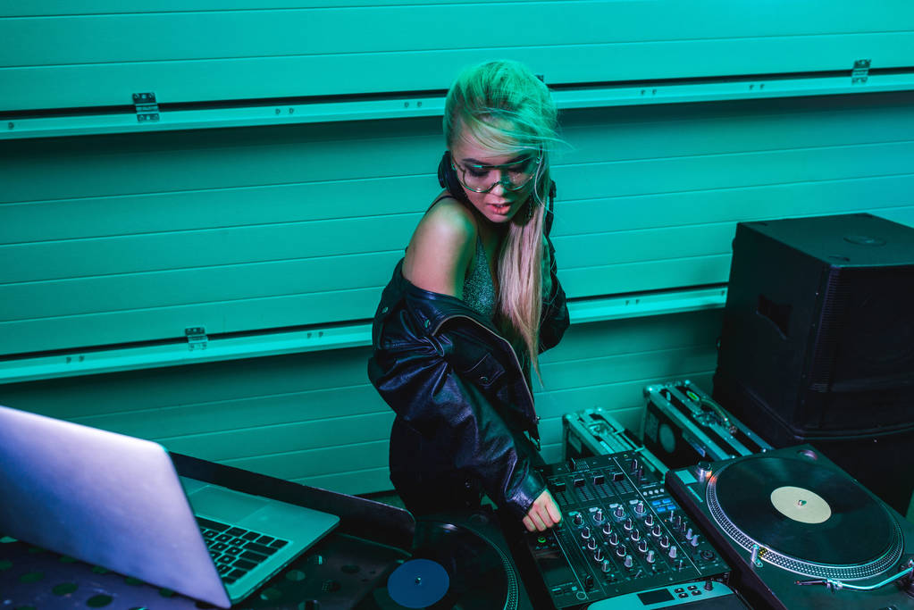
Retro Mix
Pazar 21:00
DJ Serkan
Cuma 22:00
Melis
Salı 15:00
Hit Mix
Cuma 16:00
SON HABERLER

Grammy Ödülleri Sahiplerini Buldu
Müzik dünyasının en büyük gecesinde K-Radio rüzgarı esti.

Dünya Turnesi Türkiye'de!
Yıldız isim İstanbul konser takvimini resmen açıkladı.

Haftanın Albümü: "Yaz Rüzgarı"
Eleştirmenlerin tam not verdiği o albüm yayında.

Radyonun Geleceği: Dijitalleşme
Yeni nesil yayıncılıkta Mehmet3620 farkı.

Festival Takvimi Netleşti
Bu yaz müzik hiç durmayacak, işte tam liste.
TOP 10 LİSTESİ
01 Tarkan - Geççek
Tarkan - Geççek
02 Edis - Martılar
Edis - Martılar
03 Hadise - Hay Hay
Hadise - Hay Hay
04 Mabel Matiz - Sarmaşık
Mabel Matiz - Sarmaşık
05 Gülşen - Lolipop
Gülşen - Lolipop
06 Murat Boz - Harbi Güzel
Murat Boz - Harbi Güzel
07 KÖFN - Bi' Tek Ben Anlarım
KÖFN - Bi' Tek Ben Anlarım
08 Zeynep Bastık - Ara
Zeynep Bastık - Ara
09 Sertab Erener - Vur Yüreğim
Sertab Erener - Vur Yüreğim
10 Ece Seçkin - Dibine Dibine
Ece Seçkin - Dibine Dibine
HAFTALIK YAYIN AKIŞI
PAZARTESİ
SALI
ÇARŞAMBA
PERŞEMBE
CUMA
CUMARTESİ
PAZAR
08:00 - 11:00
Güne Merhaba - DJ Merve
11:00 - 14:00
Öğle Arası - DJ Hakan
14:00 - 17:00
Hit Müzik - DJ Serkan
17:00 - 20:00
İstek Hattı - DJ Can
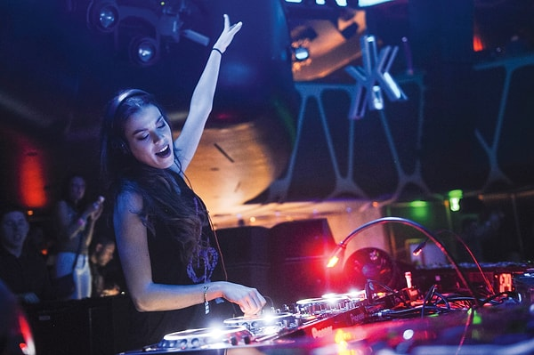
20:00 - 00:00
Gece Modu - DJ Aslı
00:00 - 04:00
Gece Nöbeti - DJ Uğur
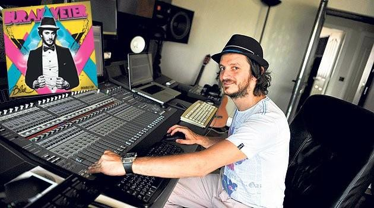
08:00 - 11:00
Salı Sabahı - DJ Burak
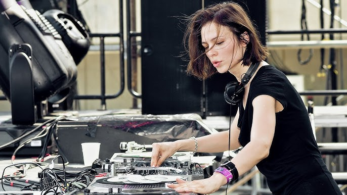
11:00 - 14:00
Pop Saati - DJ Selin
14:00 - 17:00
Enerji Mix - DJ Emre
17:00 - 20:00
Eve Dönüş - DJ Melis
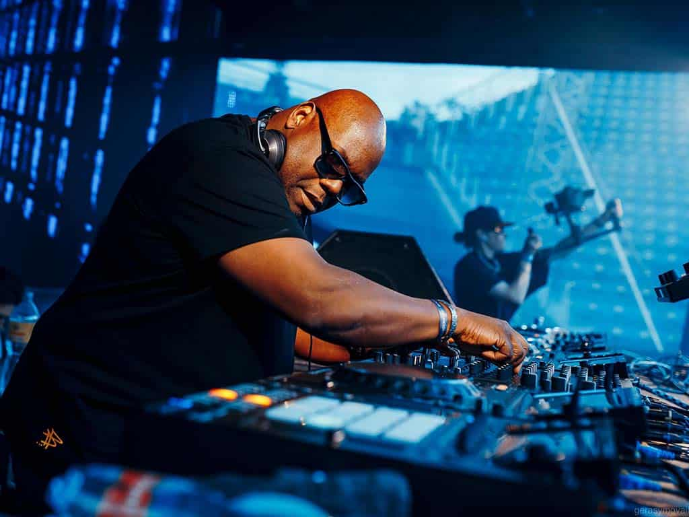
20:00 - 00:00
Akustik Gece - DJ Mert
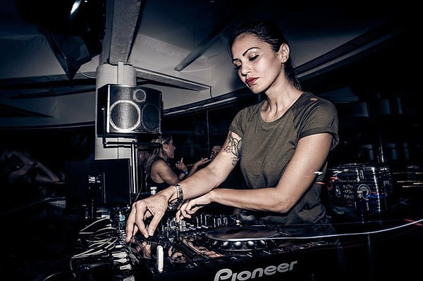
00:00 - 04:00
Derin Uyku - DJ Sema
08:00 - 11:00
Çarşamba Neşesi - DJ Pelin
11:00 - 14:00
Radyo Aktif - DJ Ufuk
14:00 - 17:00
Nostalji Rüzgarı - DJ Mine
17:00 - 20:00
Mix Show - DJ Taylan
20:00 - 00:00
Yıldız Altında - DJ Sibel
00:00 - 04:00
Gece Hattı - DJ Ege
08:00 - 11:00
Günaydın - DJ Erhan
11:00 - 14:00
Melodi Takvimi - DJ Arzu
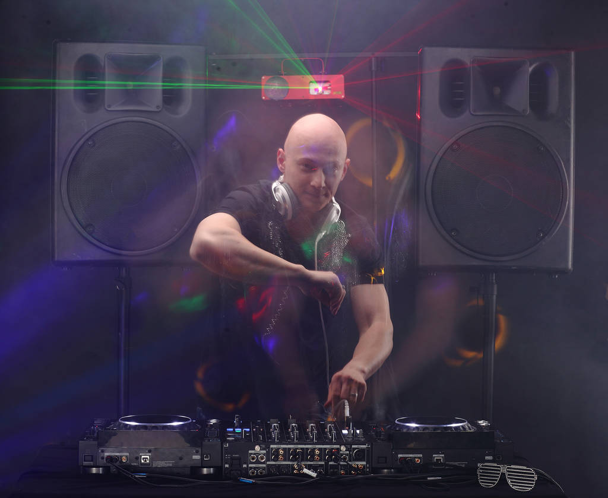
14:00 - 17:00
Tempo 100 - DJ Onur
17:00 - 20:00
Trafik Saati - DJ Gizem
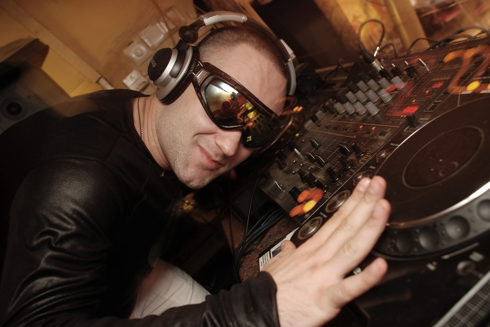
20:00 - 00:00
Mavi Gece - DJ Kerem
00:00 - 04:00
Karanlık Mix - DJ Koray
08:00 - 11:00
Hafta Sonu Yolu - DJ Esra
11:00 - 14:00
Hit Parade - DJ Berke
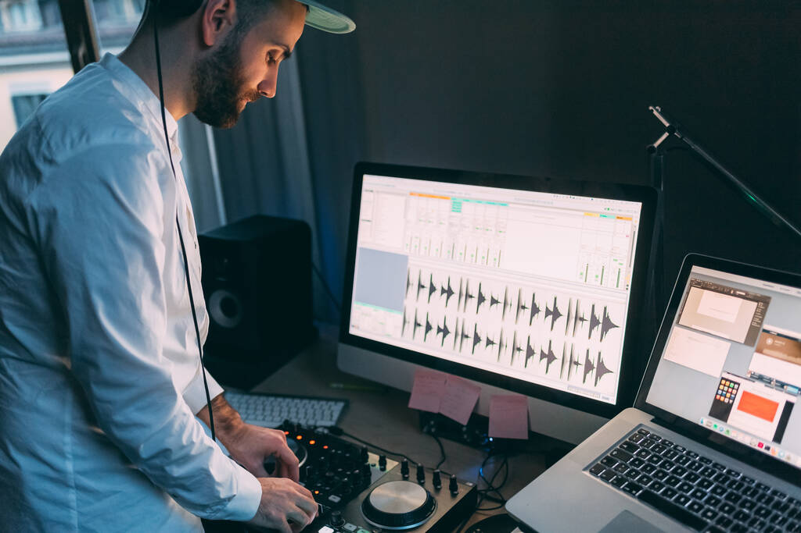
14:00 - 17:00
Cuma Ateşi - DJ Deniz
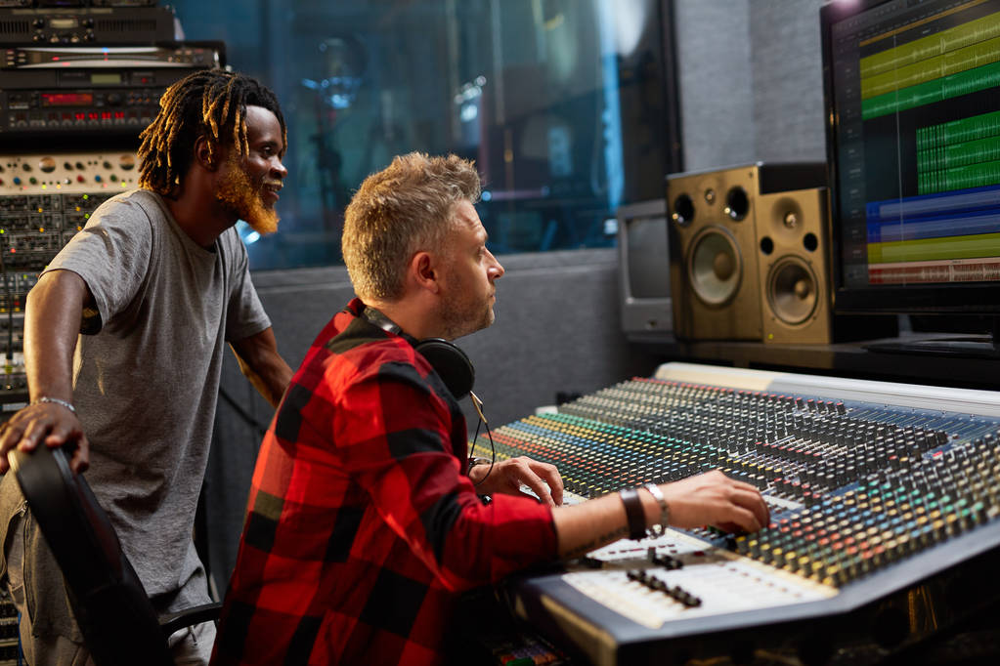
17:00 - 20:00
Parti Öncesi - DJ Murat
20:00 - 00:00
Club Night - DJ Azra
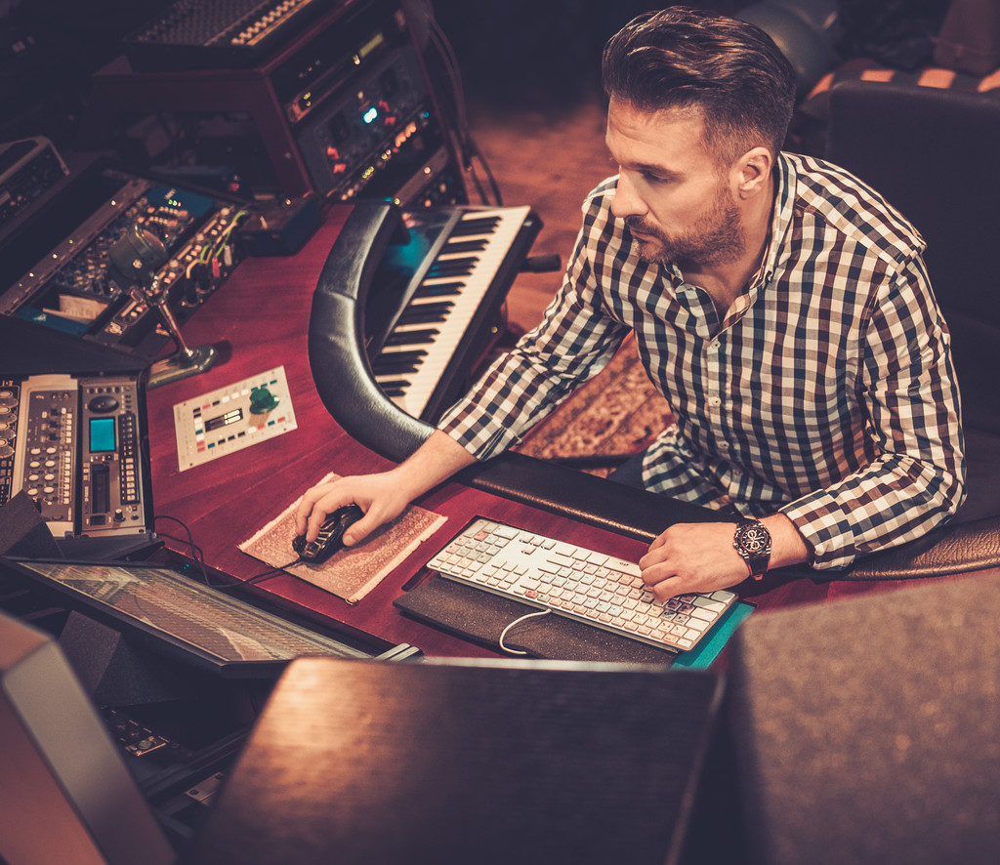
00:00 - 04:00
After Party - DJ Taner
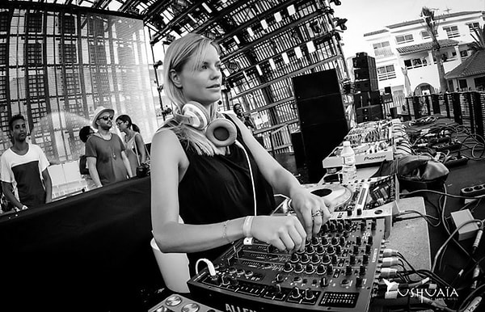
09:00 - 12:00
Cumartesi Keyfi - DJ Sinem
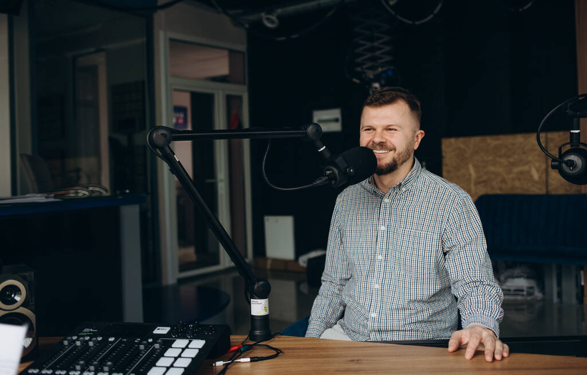
12:00 - 15:00
Hafta Sonu Pop - DJ Tolga
15:00 - 18:00
Non-Stop Müzik - DJ Ceren
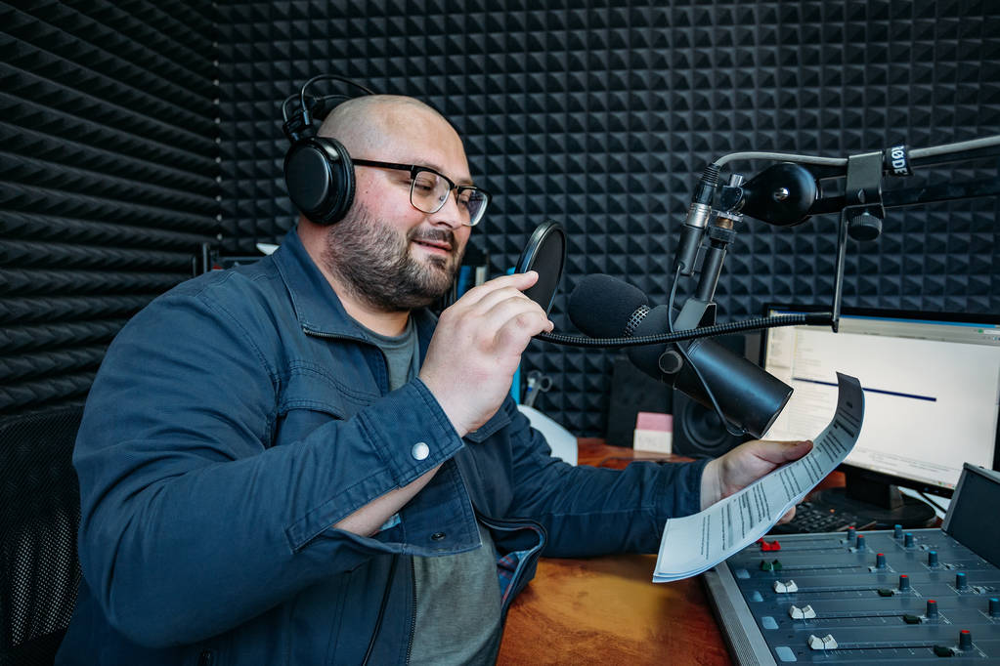
18:00 - 21:00
Party Zone - DJ Volkan
21:00 - 01:00
Dans Pisti - DJ Kübra
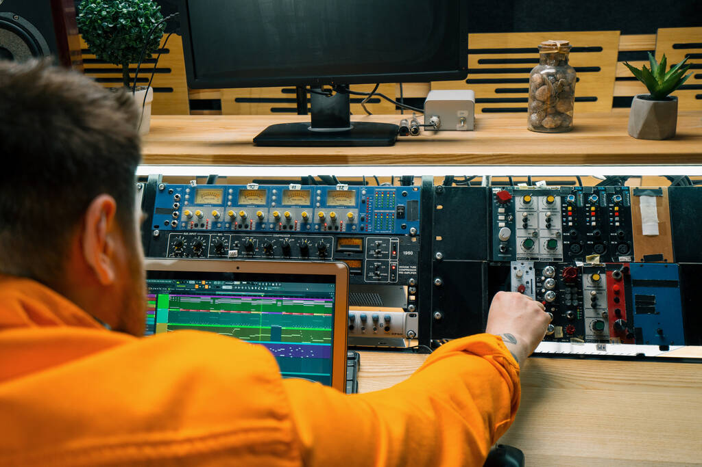
01:00 - 05:00
Sabahçılar - DJ Vedat
09:00 - 12:00
Pazar Kahvaltısı - DJ Gamze
12:00 - 15:00
Slow Rüzgarlar - DJ Kaan
15:00 - 18:00
Hatıralar - DJ Yasemin
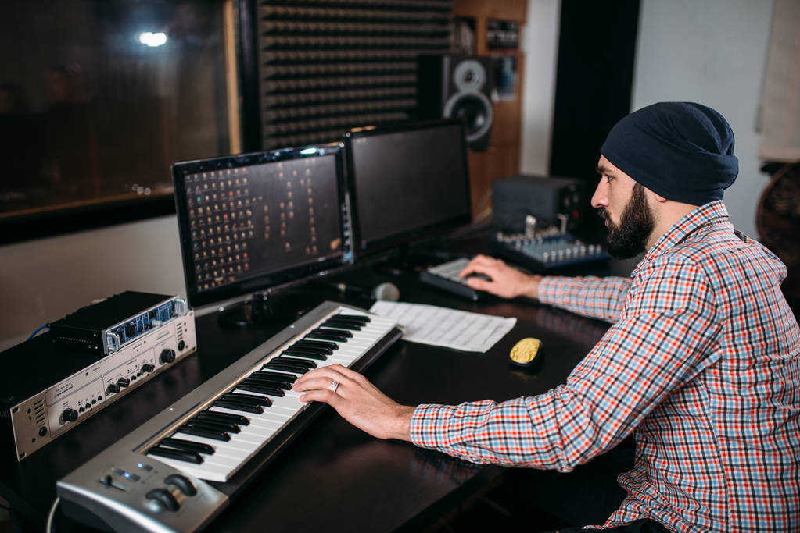